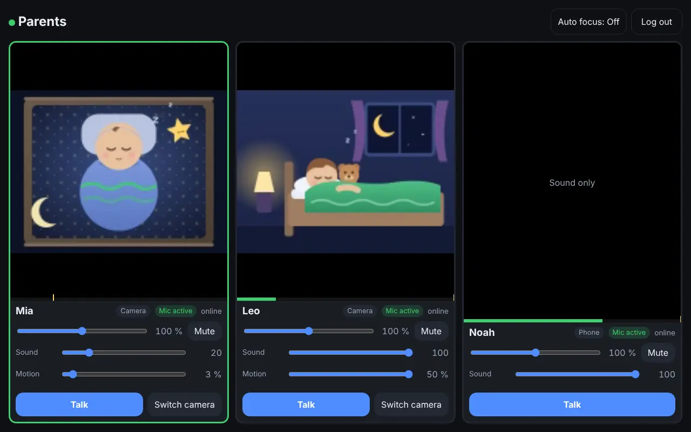
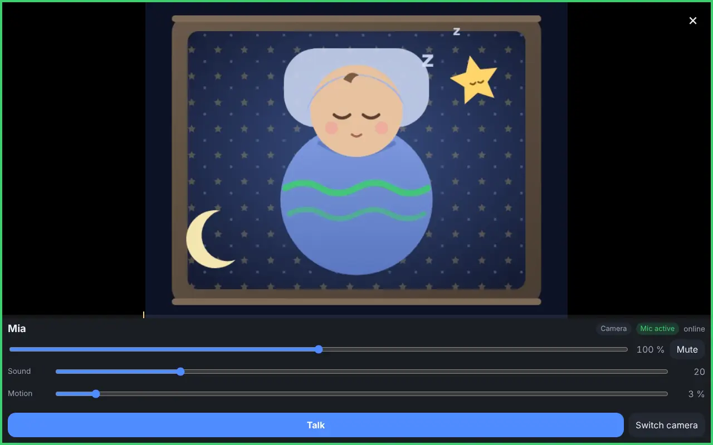
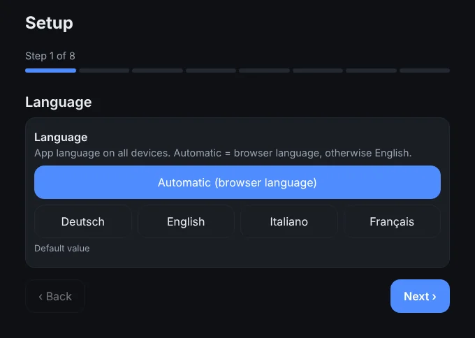
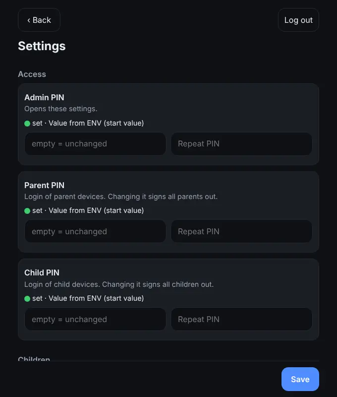
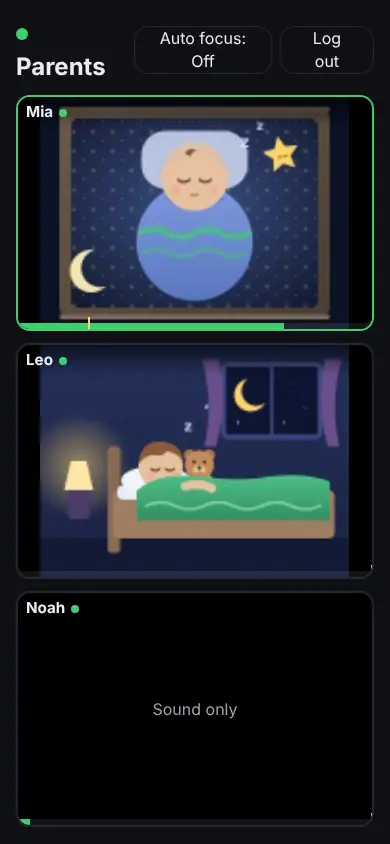
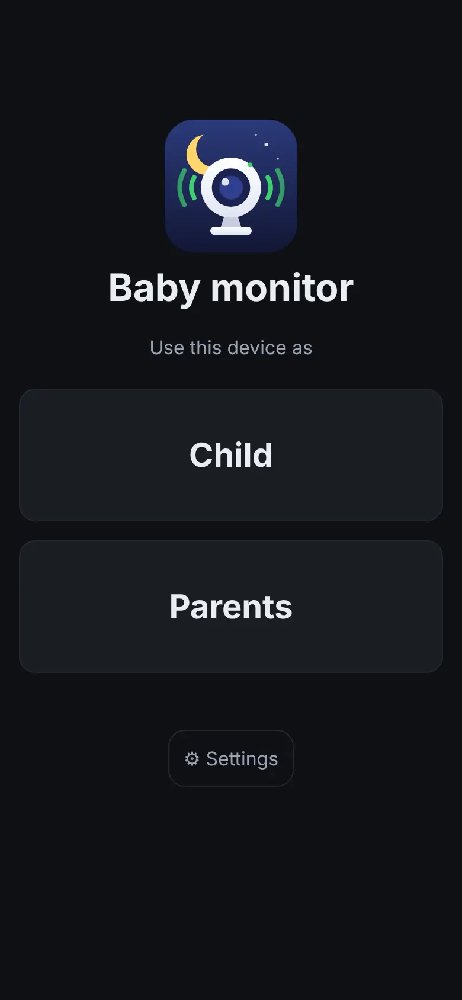
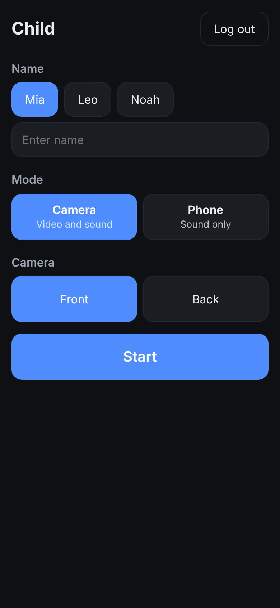
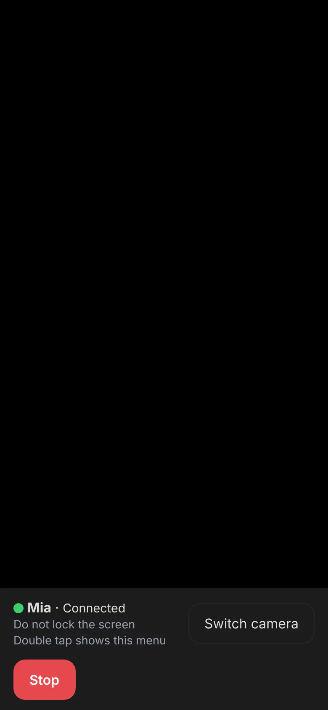

babyphone-cam
The baby monitor that lives only in your home network.
An old phone or tablet becomes the camera next to your child, any other device becomes the parent unit. Everything runs in the browser through your own Docker container – no app, no account, no cloud.
- Open source (AGPL-3.0)
- LAN or WireGuard VPN
- Nothing is recorded

Features
Everything a baby monitor needs day to day – right in the browser.
Child and parent devices
Each device picks its role: child or parent, each with its own PIN. Settings are protected by a separate admin PIN.
Camera or phone
Mode “Camera” (video and sound) or “Phone” (sound only). Name from a list or free. Front or rear camera, switchable from the parent device too.
Dark screen
The child device goes dark and still stays active (wake lock). A double tap shows the menu.
All children at a glance
Parents see all active children at once in a dynamic grid without scrolling. Any tile can be enlarged.
Green frame on activity
On sound or motion the tile lights up green. Sound and motion thresholds per child, set right from the parent device.
Listen and talk
Hear all children at the same time, volume per child, push-to-talk per child.
Auto focus
On sound, the newest up to four active children move to the front for about five seconds.
Alarm when a child device drops out
If a child device goes offline, the parent devices sound an alarm that must be acknowledged. Plus webhooks (GET, POST, PUT), for example to Gotify, Slack or Bark.
HTTPS right in the container
Certificate from a folder (e.g. Nginx Proxy Manager / Let's Encrypt), via the Cert Warden API, or self-signed as a fallback. No reverse proxy needed.
How it works
Video and sound go from the child device to your own Docker container and from there to the parent devices. The container forwards the media (mediasoup SFU) – live, without recording.
Screenshots
Real screenshots of the app with test PINs. The children in the camera image are illustrations.















Privacy and security
No cloud, no account
No vendor server, no sign-up, no app. The container runs at your place.
LAN or VPN only
Made for the home network or a WireGuard VPN. By default only devices from private networks are allowed (IP allowlist).
Nothing is recorded
Video and sound end at the container and are only forwarded live. There are no recordings.
Protected PINs
Separate PINs for child, parents and admin. PIN login is rate-limited against guessing.
Open source
Source code under AGPL-3.0 on GitHub. The image is rebuilt automatically every week to pick up security updates.
Installation
- Take compose.yaml and .env.example from the repository; set at least the container IP (BABYPHONE_IP) and the certificate folder (CERTS_DIR).
- Start the container, e.g. with
docker compose up -dor as a new stack in Unraid's Compose Manager. - Open
https://<IP or name>/in a browser. The setup wizard asks for PINs, child names, HTTPS, alarms and webhooks. - Pick “Child” on the child device and “Parents” on the parent device – each with its PIN.
Requirements
- A Docker host in your home network, for example Unraid.
- An HTTPS certificate for a name that points to the container in your LAN. Browsers only allow camera and microphone over HTTPS. Without one, the container uses a self-signed certificate (browser warning).
- LAN or WireGuard VPN (the VPN subnet must be routed to the LAN).
- Ports 443/tcp (web, WebSocket), 80/tcp (redirect to HTTPS) and 40000/udp + tcp (media).
- Designed for current browsers (Chrome, Firefox, Safari, Edge) with camera or microphone access.
Shortened example from compose/compose.yaml (Unraid, network br0 with its own IP). The complete, hardened file and .env.example are in the repository.
# compose.yaml
services:
babyphone:
image: ghcr.io/helmi1987/babyphone-cam:latest
container_name: babyphone
restart: unless-stopped
environment:
- TZ=Europe/Zurich
- CERTS_DIR=/certs
- ANNOUNCED_IP=192.168.1.30
volumes:
- /mnt/user/appdata/babyphone:/data
- /mnt/user/appdata/Nginx-Proxy-Manager-Official/letsencrypt:/certs:ro
networks:
br0:
ipv4_address: 192.168.1.30
networks:
br0:
external: trueFAQ
Do I need an app?
No. Child and parent devices only use the browser.
Does it work when I'm away?
Only through a VPN such as WireGuard that is routed into your home network. There is deliberately no cloud access.
Is anything stored or recorded?
No. Video and sound are only forwarded live. Settings are stored, PINs only as hashes.
What should I watch out for on the child device?
Keep the page in the foreground, the screen unlocked and the device on power. Locking or switching apps stops camera and microphone (iOS, Android). LCD screens keep their backlight; only OLED goes truly dark.
Which devices has it been tested on?
The app is designed for current browsers (Chrome, Firefox, Safari, Edge). Tests on real iOS and Android devices are still pending.
Which languages does the app support?
The app interface is available in German and English, depending on the browser language.
What does it cost?
Nothing. babyphone-cam is open source under the AGPL-3.0 licence.